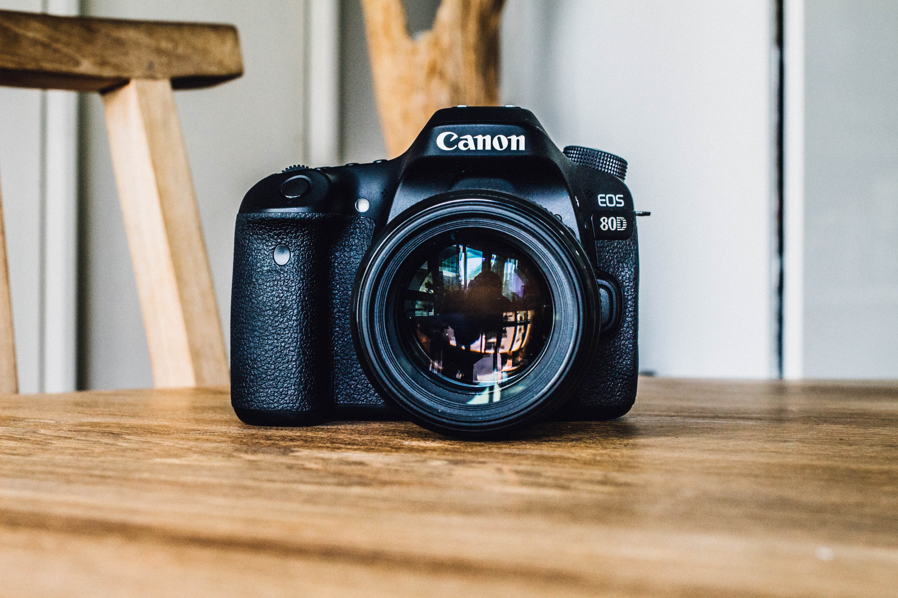

- 책
- 사진
- 일기
일상의 기록
읽고 쓰고 보고 그리고 삶
물리학적으로 사진(寫真 또는 光畵, Photograph)은 물체에서 반사된 빛과 같은 전자기적 발광을 감광성 기록재료 위에 기록하여 얻은 빛 그림, 즉 광화상을 말한다. 사진은 보통 사진기로 만들어지는데, 사진기는 빛을 모아 사진 필름이나 CCD 또는 CMOS와 같은 이미지 센서에 초점을 맞추어 상을 맺히게 한다. 그리스어의 'photos'(빛)와 'graphien'(그리다)에서 유래한 말로, 1839년 존 F.W. 허셜 경이 처음 사용하였다.
한국어에서 '사진'의 뜻은 아래와 같다.

- 사진기로 대상의 영상을 인화지에 찍어 내는 기술.
- 인화지에 찍힌 피사체의 영상.
- 이러한 기술을 도구로 사용하는 예술의 한 분야 등의 뜻을 가진다.
또한 한국어에서는 사진을 찍는 일을 직업으로 하는 사람은 사진사, 예술 활동으로서 사진을 찍는 사람을 사진작가, 사진에 대한 전문 지식과 기술을 갖춘 사람을 사진가로 분류하기도 한다.